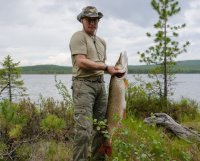
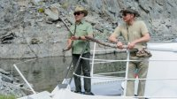
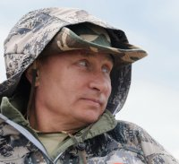
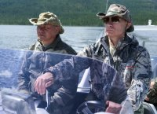
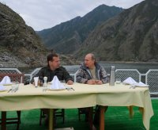
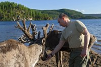
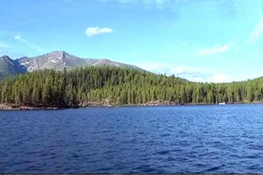

{kind=link}
{kind=link}
{kind=link}
{kind=link}
{kind=link}
{kind=link}
В середине 80-х годов, после окончания исторического факультета Курского пединститута, мне посчастливилось работать в Туве, удивительном месте на карте нашей Родины. С тех пор я просто влюблен в эти места, и ежегодно летом выезжаю в Туву на два-три месяца.
2012 год был в плане отдыха и знакомства с новыми сторонами жизни в этой республике особенно удачным - около трех месяцев я жил в Верховье Енисея в старообрядческой общине. Занимался исследовательской работой, а после написал книгу «Староверы Тувы». Летом 2013 года я снова в Туве, теперь у меня другие планы: написать о природе Тувы, в частности, о рыбалке.
Я уверен, что в душе каждого рыбака живет мечта о рыболовном Эльдорадо-крае, где
множество рек и озер, которые полны разнообразной рыбой. Я нашел этот край. И о нем мой рассказ. Это место находится в северо-восточной части Республика Тува и
отделено от остальных районов горными хребтами и таежным бездорожьем. Называется
это Тоджей, точнее, Тоджинским районом, расположенном в Тоджинской котловине. Ее окружают три мощных горных хребта: с юга – хребтом Академика Обручева с цепью покрытых вечными снегами «гольцов», с севера - Тазарама и с северо- востока - Удинский. Большинство рек и речек, притоков Бий-Хема (Большого Енисея), берут начало именно в предгорьях хребтов Тазарама и Удинского. И только сам Бий-Хем течет вдоль хребта Академика Обручева. С южной стороны хребта протекает его младший брат Каа-Хем (Малый Енисей). Они сливаются воедино у города Кызыла, столицы республики Тува. Сливаясь вместе, они образуют Большой Енисей – Улуг-Хем, начало великой Сибирской реки.
Под белыми лилиями скрывается Царь-рыба
Тоджа обильна озерами. К слову сказать, в Туве 60 озер приходится на Тоджинскую котловину. Большой Енисей с многочисленными притоками находится в зоне меньшей досягаемости, что и делает его землей обетованной для любителей рыбалки. А я хочу подробно остановиться на одном из красивейших озер Тувы – Азасе. Аза - тувинское название демонических существ, которые, согласно народным верованиям, живут в озере. На озере Азас расположено 9 островов, покрытых вековыми кедрами. Жемчужина Тувы - Азас, - самое большое озеро, 20 км в длину и 5 в ширину. Средняя глубина 7-12 метров, но есть места и до 35-40 метров. Озеро Таежное Тоджинской котловины, откуда берет истоки Енисей, частично входит в состав государственного заповедника «Азас». Тоджа - это единственное место в Туве, на озерах которой цветут белые кувшинки - водяные лилии. В июле – августе, когда они зацветают, озеро становится похоже на сказку с русалками. Азас - это рай для любителей рыбалки и просто ценителей нетронутых цивилизацией уголков природы. В озере Азас много рыбы, можно поймать полтора метровую щуку, сига, а самые опытные и удачливые ловят царственную рыбу сибирских рек - тайменя. Вот в каком райском уголке мне удалось побывать и порыбачить. И я хочу поделиться своими впечатлениями с любителями дикой природы, и, особенно, с рыбаками. Любезно предоставил мне такую возможность молодой предприниматель из Тоджи Тюлюш Болат Сергеевич, который окончил Красноярский филиал РОСИ по специальности «Туризм и менеджмент». Он предложил пожить на его туристической базе «Затерянный Рай».
База находится на территории бывшего пионерского лагеря, расположена в самом выгодном месте. Территория ее большая, которая интенсивно приводится в порядок, имеется более сорока летних домиков на 2-4 человека. Ведется активное строительство. Пока я жил 10 дней, здесь очень быстро возвели два домика из толстого бруса, рассчитанный для круглогодичного приема рыбаков и туристов. В этом году будет выстроено 5 новых домиков и баня. Имеется хороший лодочный причал. Недалеко от базы на озерных островах также планируется поставить жилье, наподобие индейских вигвамов, покрытых толстой корой из лиственницы, для «робинзонов», которые желают побыть наедине с природой. Перспективы очень хорошие. В июне 2014 года планируется заезд гостей и рыбаков со всех уголков нашей родины. Рыбаки! Спешите на праздник «День рыбака».
Щуки, с повадками крокодила
А теперь мне не терпится поделиться своими впечатлениями. В первый день пребывания на Азасе за три часа я пойман 6 щук, от 1,5 до 7 кг. И это сущая мелочь. Попадаются особи, достигающие гигантско - пугающих размеров. Вот, что мне поведал один егерь.
Вез он как-то на лодке отдыхающих туристов на один из островов. Недалеко от берега он заметил на берегу которая крутилась на одном месте. Алексей, так звали егеря, подумал, что она запуталась в сеть. И они поспешили на выручку. Когда подплыли совсем близко, он хотел веслом зацепить сеть, чтобы освободить животное. Каково же было его удивление, что ногу косули ухватила своей пастью огромная щука трехметровой длины (как Лохнесское чудо). С большим трудом удалось вырвать заднюю ногу косули из пасти этого монстра. В задней ляжке косули остались огромные щучьи зубы. Среди тех, кто плыл на этот остров, была женщина-медик, которая обработала рану животного. Вскоре пленницу благополучно отпустили на остров. Высадившись, все наслаждались природой, однако купаться после такого случая никто не захотел.
В фойе на одной туристической базе висят чучела голов щук трофейных размеров. В пасть одной из щук я легко просовывал свою голову до плеч, через частокол острых зубов. Голова щуки напоминала голову огромного крокодила.
«Как у Путина!»
По счастливой случайности, примерно в одно и то же время, на Азасе, только в более тихом уголке озера, находился на рыбалке Президент Владимир Путин с министром обороны России Сергеем Шойгу с поддержкой с воздуха эскадрильей «Мигов». Это уже мне потом об этом рассказали рыбаки и отдыхающие на озере Азас, те, которые приехали недавно и успели узнать из новостей о столь высоком визите по соседству. Тогда Владимир Путин поймал щуку на 21 килограмм.
Я же ничего об этом не знал, так как отдыхал без связи и интернета. Представляете, какова была реакция отдыхающих, когда я, спустя два дня, спустя 2 дня, выплыв в 10 часов утра на берег выгрузил вместе со спиннингами огромную разбойницу весом на 22 кг 750 гр. Все стали говорить: «Ничего себе! Как у Путина». А я в толк не могу понять, почему как у Путина? Потом рассказали. Все просили меня сфотографироваться на память со мной, а потом уже со щукой. В желудке этой щуки находилось проглоченная белка, которая, возможно, со страху перед вертолетами и с самолетами хотела перебраться с острова «на большую землю» и попалась щуке. В отличие от В.В.Путина я вываживал ее около часа. Хорошо фрикцион на катушке не подвел. Подсадчика у меня не было по причине того, что он нечаянно утонул. И мне пришлось применять «шокотерапию», да простят меня гринписовцы, - веслом доводить дело до логического конца. В отличие от Президента я ее не стал целовать улов в щучью морду. Она меня в отместку укусила за палец. Приглашаю В.В.Путина летом 2014 года на соревнование. А вы, дорогие читатели и любители рыбалки, приезжайте без приглашения, по-простому и без церемоний. Вокруг острова селятся многочисленные водоплавающие утки, дикие гуси, ондатры и водяные крысы. Вот об этом очень хорошо осведомлены долгожительницы озера. Вроде той, которую я поймал, они денно и нощно «патрулируют» эти участки озера, переваривая в своем желудке всех зазевавшихся.
Ленивые охотницы
Рыбак, который ведет государственный промысел, Михаил Григорьевич, показывал мне огромные дыры в сетях. Щуки вырывали попавшиеся в сети язей прямо с кусками полотна. «Лень ей кобыле, охотиться. Вот она и разбойничает», - ругался Григорьевич. В один из дней мне довелось рыбачить с одним опытным спиннингистом из Москвы. В этот день мы поймали 17 щук от 1,5 до 7 кг. В конце рыбалки у меня на спиннинг села щука таких размеров, что ее не удалось даже близко подвести к лодке. Рыба была с хорошее бревно. Мы откровенно испугались, что она просто-напросто утопит нас, и я перерезал плетенку. Но она не спешила уходить в глубину. Какое-то время стояла рядом с лодкой, зная о своей безнаказанности, потом рванула кукан с такой силой, что едва не опрокинула лодку, и сорвав с него самую большую из пойманных щук на семь кг. неторопливо ушла на глубину. После такого «теплого приема» мы поспешили на берег. Это то, что касается щуки, как наиболее распространенном рыбном виде Тоджинских озер.
«Мышка» из медвежьей шерсти
Здесь очень популярна рыбалка «на мушку» из медвежьей шерсти. За несколько часов можно поймать море хариуса, ленка и небольших таймешков. Тайменей до 10 килограммов так называют местные. Правда, его придется выпустит на волю, если попался на крючок, так как таймень записан в «Красную книгу». В пасмурные дни рыба отлично ловится на яркие вращающиеся блесны. При этом ленки попадаются до 5 кг., а таймени случаются такие, что в одиночку с ним очень трудно справится. Таймень в Тодже стал настоящей легендой, это самый крупный представитель лососевых. По праву тайменя называют «Царь - рыбой» сибирских рек. Настоящие любители острых ощущений предпочитают ловить ночами, на искусственную мышь. При этом магазинные резиновые «мышки» совершенно не котируются. А лучшей проверенной и доказанной на практике считается приманка из куска сухой кедровой или пихтовой дощечки. Обычно ее размеры следующие: длина – 8 - 10 см, ширина задней части - 3-4 см, а в голове около полтора см. Толщина заготовки 2-2.5 см, заготовку обтягивают беличьей шкуркой, которую зашивают на брюшке у «мыши». На хвостовой части оставляют узкую полоску шкурки, которой обтягивают цевье крючка, закрепленного на пропущенной сквозь корпус приманки стальной проволоке. Кованый крючок № 1,0 или даже больше. Еще один секрет заключается в том, что местные рыболовы привязывают в головной части «мыши» под небольшим углом тонкие пучки конского волоса длиной 2-3 см. Играя на течении, волос создает очень точную имитацию плывущей мыши. И ленок, и таймень шумно атакуют приманку, стараясь схватить и утопить. Поэтому крючок хвостовой части мыши всегда крепят жалом вверх. Лучшее время для рыбной ловли как на мушку, как на и на «мышь» и, разумеется, на блесну - август-сентябрь. Это и лучшее время для сбора даров в тайге ореха, ягод, грибов, лекарственных трав.
Рыбачить на Тодже в одиночку опасно
В тихие утренние часы, затаившись где-нибудь в укромном месте, я нередко наблюдал, как охотится таймень. Таймень безжалостный хозяин своих владений. Он не даст уйти никакому зверьку, если тот соразмерен его громадной пасти. Прекрасной добычей для тайменя являются мыши, крысы, белки, утки, медленно передвигающиеся по поверхности воды. Такая потенциальная добыча для него более предпочтительнее, ведь ее поимка «еды» требует меньше энергозатрат, чем охота на рыбу. Поэтому плывущая в воде мышь абсолютно беспомощна перед зубастой пастью тайменя и щуки. Вот почему местные рыболовы успешно ловят рыбу на «мышей», сделанных своими руками. Я обменялся с местными рыбаками и привез домой пару экземпляров. Необходимо помнить об осторожности. Рыбалка в одиночку крайне опасна. Крупный таймень, а он попадается здесь до 50 кг, может легко стащить рыболова воду. Кроме тайменя, щуки, ленка, сига, окуня, налима в озере Азас обитает два вида хариуса: западно - сибирский и монгольский. Монгольский хариус самый крупный, достигает длину от 50 до 70 см. Хариуса обычно ловят на искусственные мушки, сделанные из шерсти медведя. Их называют «не повезло косолапым». Они хорошо держатся на поверхности, вызывая дикий восторг и аппетит у хариуса. Также хорошо себя зарекомендовали небольшие воблеры. К сожалению, мне не посчастливилось поймать каких-либо выдающихся экземпляров. Но и хариусы 300-400 граммовые вызывали сердцебиение. Очень много ленка - его еще называют сибирской форелью. Эта рыба, в отличие от тайменя и крупных щук, предпочитает обитать в воде в крупных компаниях. Поэтому, если вы поймали одного, не спешите уходить с этого места. Поймаете еще и еще. В основном попадаются экземпляры весом от 1 до З кг. Но местные рыбаки утверждают, что попадаются и до 6 кг. Ленки соблазняются мушкой и воблерами. Для тех, кто уже надумал провести отпуск в рыбацком раю, что вы, хуже В.В.Путина?
Отдых, который не забудется никогда
И сегодня Тоджинское Эльдорадо ждет всех, кого не пугают дальние дороги, ночевки посреди нехоженой тайги на берегу буйных рек или громадных высокогорных озер со студеной и холодной, как лед водой. Отпуск с рыбалкой, проведенные в Тодже на озере Азас, навсегда запомнится удивительной яркостью впечатлений от красоты и необычайности здешней природы. Кто-то может сказать, что такой отпуск и рыбалка стоить будет недешево. Согласен, в Турцию и Египет можно сгонять. Но, как говорили когда-то, «Париж стоит мессы». В завершении хочу дать еще один совет. Отправляясь в Тоджу даже в середине жаркого тувинского лета, не забудьте прихватить с собой теплую одежду. Суточная температура в горной котловине очень велика. Особенно заметно в августе - сентябре, а именно тогда рыбалка на Тодже наиболее интересная. Температура днем доходит до +35, ночью и утром опускается до 0, а случается и до -2 - -3, может и снег выпасть ненадолго. Так что без теплой одежды у костра будет не весело. И конечно совершенно необходимо иметь с собой видео-фото камеру, чтобы поделиться впечатлениями от тоджинских встреч и приключений с друзьями и знакомыми. А поделиться будет чем. Есть что половить и на что посмотреть.
Путин на рыбалке в Туве поймал 21-килограммовую щуку
www.tuvaonline.ruПрезидент России Владимир Путин, премьер Дмитрий Медведев и министр обороны Сергей Шойгу провели выходные в Республике Тува. Во время отдыха глава государства и премьер-министр осмотрели местные красоты, порыбачили, а Путину удалось поймать огромную щуку весом 21 кг.
Сам президент неоднократно заявлял, что особенно он ценит рыбалку в России, а одно из лучших мест для ловли рыбы для него — Тува.
— Там есть река Хемчик — самый крупный левый приток Верхнего Енисея, или, как его называют местные жители, Улуг-Хема. Я гарантирую всем — это незабываемый отдых, причем не только на берегах Хемчика, но и по всей Туве в целом, — говорил ранее глава государства.
В первый день уикенда президент вместе с главой Тувы и министром обороны Сергеем Шойгу порыбачили на высокогорном озере Ак-Аттыг-Холь.
Оно находится на высоте 2 тыс. м, а на его берегах вечная мерзлота.
— Дубняк жуткий, — делятся сопровождавшие главу государства. — Днем за тридцать, а вечером всего три.
Президент переночевал в юрте неподалеку от озера.
Кстати, в этот день у губернатора региона был день рождения, и на небольшой праздник по этому случаю приехал известный в Туве певец горлового пения Ховалыг Кайгал-оол.
На следующий день президент перелетел на озеро Токпак-Холь, куда практически не ступала нога человека. Вначале улов у Владимира Путина был не очень, но егерь дал ему блесну «Царь-рыба», сделанную на малом предприятии в Красноярске. И буквально через несколько минут рыбалка пошла в другом темпе. Клюнула огромная щука.
— Путин вытаскивал ее более трех минут, даже егерь, который оказался свидетелем рыбалки, сказал, что не видел такого улова, — поделился впечатлениями пресс-секретарь главы государства Дмитрий Песков. — Предчувствуя комментарии, что рыбу президенту специально подцепили водолазы, скажу — вокруг никого не было.
Глава государства был доволен не только самой рыбалкой, но и уловом. Вынимая из воды пойманную щуку в 21 кг, он даже шутил.
— Владимир Владимирович, вы с ней осторожней, она укусить может, — говорил гид.
— Я сам ее могу укусить, — отшутился Владимир Путин.
Повара потом приготовили из щуки котлеты.
После этого президент переместился на реку Урбун — это приток Енисея, там к нему присоединился премьер Дмитрий Медведев. Президент и председатель правительства вместе искупались в холодной реке, порыбачили, а также обсудили вопросы экономического развития страны.
Кроме того, Владимир Путин и Дмитрий Медведев прошли по реке на катере — оба имеют права на управление этим видом речного транспорта. Владимир Путин осматривал местные красоты, а Дмитрий Медведев фотографировал.
Глава государства также посетил национальной заповедник в Туве, где в рамках программы Русского географического общества расставлены фотоловушки на диких кошек, в том числе на ирбиса. Ученые всё чаще их там фиксируют. Кстати, незадолго до приезда Путина в объективы камер попал снежный барс по кличке Монгол, на которого несколько лет назад президент лично надевал спутниковый ошейник.
Последний раз Владимир Путин и Дмитрий Медведев рыбачили вместе в 2011 году в Астрахани.
Особенности национальной рыбалки в Туве
Рыбалка в Тыве
Республика Тыва, расположена в самом центре азиатского континента. Географически центром Азии считается место слияния двух Енисеев Большого (Бий-Хем) и Малого (Каа-Хем), в результате образуется Великий Енисей (Улуг-Хем). 82% территории Тувы занимают горные массивы, остальные 18% приходятся на межгорные котловины. С запада республика ограничена высокими хребтами Шапшальский и Чихачева, с северо-запада - хребтами Западного Саяна, с востока хребтами - Восточного Саяна, с юга – монгольскими горами.
Наибольший туристский интерес представляют горные районы Тывы. Где хребты чередуются с прекрасной нетронутой тайгой, озерами с обилием рыбы. Распространенным деревом в горах является сибирский Кедр. Из-за южного расположения Тывы в кедровом орехе содержится большое количество масла. По вкусовым качествам орех считается наилучшим на территории России.
{kind=link}
Рыбалка в Тыве, проводится на реках, малопосещаемых туристами. Поэтому трофеи могут порадовать и искушенного рыбака. Рыбалка в Тыве осуществляется в виде сплава по реке на катамаране, либо с использованием моторной лодки. Так же возможна зимняя подледная рыбалка. Места зимней ловли – это горные озера, в которых в изобилии ловится ленок и хариус. Да места участники добираются на снегоходах. Ночевки происходя в зимовьях, отапливаемых печью.
После того, как была построена грунтовая дорога до Тора-Хема рыбалка на реках Бий-Хем и Хамсара приобрела большую популярность, и количество рыбаков увеличилось. Сейчас многие на автомобилях могут добраться до верховий в районе озера Мюнь, а затем на моторках подняться до Бий-Хемского водопада. Это не могло не сказаться на количестве рыбы в реке. Старожилы говорят о временах, когда на Бий-Хеме не составляла труда поймать крупного тайменя или ленка. Сейчас уловы гораздо слабее. Ловля ленка с недавнего времени запрещена в Туве. Таймень – занесен в красную книгу республики. Места проведения наших рыболовных туров еще пока недоступны большому числу любителей рыбной ловли, так как попасть туда не так просто. В большей части – это верховья рек, куда можно попасть только на вертолете.
Отдельного внимания заслуживают реки Тувы. Особенность рек – это прозрачная вода, с четко выраженным природным вкусом. Вода в каждой реке может иметь свой вкус, благодаря обилию природных минеральных источников. Так же стоит отметить обилие в реках уже редких на сегодняшний день видов рыб: хариус, ленок (сибирская форель). Благодаря не населенности территорий, в некоторых местах встречается Таймень.
Рыбалка в Тыве
diala.ruТыва славится не только гористой местностью, но и своими кедровыми лесами, запасами пресной воды. В Тыве берёт начало одна из крупнейших рек земного шара — Енисей (Улуг-Хем). Сначала в Тувинской котловине около Кызыла сливаются две реки — Большой Енисей (Бий-Хем) и Малый Енисей (Каа-Хем). Основную массу воды реки получают во время весенне-летнего таяния снежного покрова и летних дождей. На территории республики насчитывается более 430 озёр, большинство из которых ледникового происхождения. Есть также 13 солёных грязевых озёр и более 50 целебных источников, воды которых успешно используются для лечения различного рода заболеваний.

Природа Тывы уникальна, а водоемы пока еще богаты рыбой. Именно это прежде всего, привлекает туда не так уж и многочисленных туристов и путешественников со всей страны.
Рыбалка на реках и озерах Тывы интересна возможностью побороться с такой сильной рыбой как Таймень, хорошо ловится Хариус, и другие виды рыб. Наиболее комфортной рыбалка в этих местах, бывает ранней осенью, или поздней весной.
Регион занимает ниши вип-туризма. Тыва стала излюбленным местом для рыбалки и охоты сильных мира сего. Именно здесь, в Тыве, во время рыбалки на озере Токпак-Холь в отдаленном районе Тывы Президент России Владимир Путин поймал 21-килограммовую щуку, а князь Монако, известный всеми миру, как искушенный турист и охотник, добыл здесь горного козла.
Река Енисей является хариусовым водоёмом, в речной системе в основном, обитают хариус, ленок и таймень, что характерно для рек горного и предгорного типа юга Сибири; в затонах и старицах - щука, окунь, сибирская плотва, язь, лещ, сиг; в озёрах - сиг, щука, язь, окунь, плотва, налим, елец, хариус, пелядь. В Саяно-Шушенском водохранилище обитают те же виды рыб, что и в реках: плотва, окунь, щука, налим, лещ, язь. Крупные реки служат местами нереста, нагула и зимовки сиговых и частиковых видов рыб, а мелкие притоки - местами нереста и нагула, в основном, половозрелого хариуса и тайменя. Промысловое значение имеют 11 видов рыб: ленок, пелядь, хариус, щука, плотва, язь, налим, окунь, лещ.
Рыболовные туры в Тыве, проводятся на реках, малопосещаемых туристами. Поэтому трофеи могут порадовать и искушенного рыбака. Туры могут осуществляется в виде сплава по реке на катамаране, либо с использованием моторной лодки.
В Республике Тыва можно наблюдать присутствие трех различных видов озерных водоемов. Это слабоминерализированные озера, сильно минерализированные озера, и пресные озера, на которых в основном и происходит рыбалка в этом крае. Активно разводится большое количество разнообразной промысловой рыбы в озере Чагытай, или Джагытай-Куль. Здесь можно ловить такие породы, как пелядь, щука, лещ, язь, и карп. Почти во всех водоемах Тывы можно все время ловить рыбу, кроме периода нереста.
На озерах такого типа, как Чагытай, хорошо ловится щука, которую можно в большом количестве найти в зарослях трав. Клев щуки здесь хороший, особи в основном попадаются до одного килограмма, реже - до трех. А на озере Чойган-Холь проводятся популярные фестивали по спортивной рыбной ловле. Это озеро расположено у границы с Бурятией, близ одного из хребтов Саян.
Зимняя рыбалка в Тыве, также может быть вполне продуктивной. Зимняя подледная рыбалка в Тыве в большинстве случаев проводится на горных озерах, в которых в изобилии ловится ленок и хариус. Да места участники добираются на снегоходах. Ночевки происходя в зимовьях, отапливаемых печью.
Все водоемы имеет определенный статус - или он общедоступный или передан в аренду. Любительское рыболовство в общедоступных водоемов рыбалка бесплатна, а на находящихся в аренде водоемах рыбалка может быть платной. Узнав статус водоема, можно смело отправляться на рыбалку. Перед рыбалкой необходимо заранее ознакомиться с правилами ловли рыбы в Тыве.